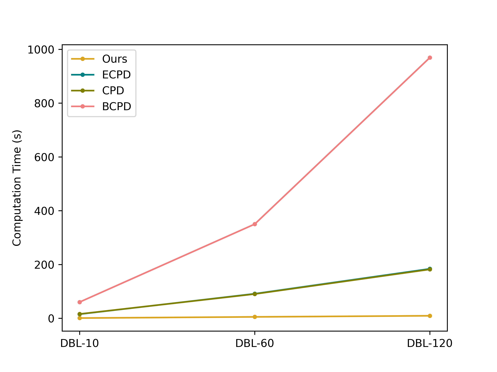

Virtual landmarks tracking
Tracking arbitrary landmarks' trajectories. Noted that the selection of virtual landmarks are merely for visual clarity. Under the hood, every point on the breast surface can be densely tracked by the proposed approach.
DBL-10 (10 fps)
DBL-60 (60 fps)
DBL-120 (120 fps)
Quantitative metrics
Computation time

Alignment on control landmarks
P.S. CPD & BCPD are excluded from comparison because they don't utilize control landmarks information.
Alignment on arbitrary landmarks
BibTeX
N/A